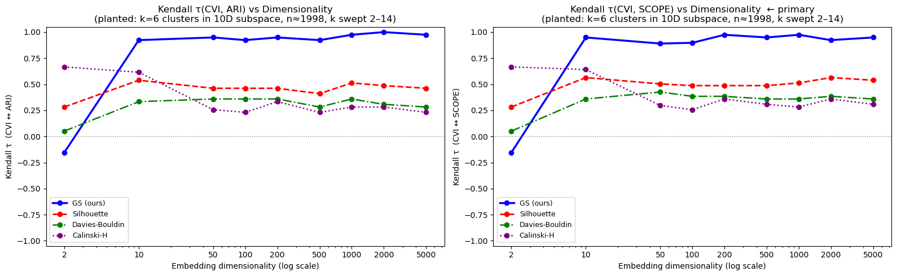
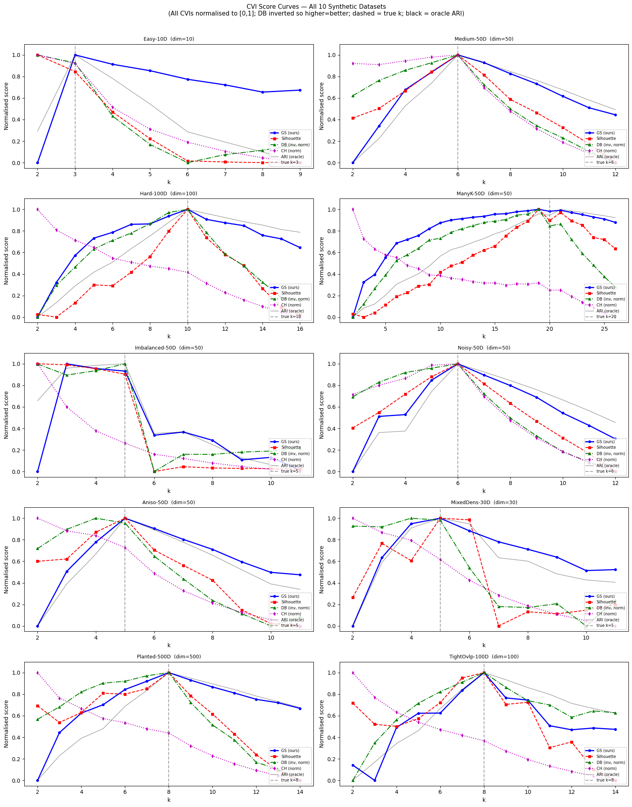

Four components — Graph-SCOPE, AdaGraph, the Density-Aware Sampler, and SLCD — operating together to produce structure-centric clusters in 100 to 5,000+ dimensions without any dimensionality reduction. The first complete clustering pipeline that survives the curse of dimensionality intact.
The first unsupervised clustering quality metric demonstrated to maintain discriminative power at any dimensionality up to 5,000 features. Operates on a precomputed kNN graph — no pairwise distance computation. Decomposable into five components: Modularity (60%), Consistency (20%), Boundary (10%), Noise (5%), Balance (5%). Achieves 99.8% of oracle k-selection performance across 10 benchmark datasets, where Silhouette achieves 92.7%.
The first clustering algorithm to operate effectively in unreduced feature spaces of 100–500+ dimensions without preprocessing through PCA, UMAP, or other dimensionality reduction methods. Operates on a kNN graph constructed in the data's native feature space. 24–62% improvement in clustering quality (ARI) over HDBSCAN on real text and gene-expression data, with zero data points discarded as noise.
A general-purpose sampling method that preserves the density structure of arbitrary datasets through hill-climbing on a kNN graph with proportional budget allocation. Without this sampler, parameter transfer across scales would fail because uniform random sampling distorts density modes. Filed as an independent claim in the AdaGraph patent — usable with any clustering algorithm.
Tune AdaGraph parameters on a 1,000-point sample. Deploy those exact parameters to a 500,000-point dataset in 100 dimensions. Quality is preserved — mean Δ = 0.000 across seven scaling tests on consumer hardware in under three minutes. Combined with the Density-Aware Sampler, SLCD is the operational backbone of the entire stack.
Silhouette is the standard unsupervised clustering metric used in scikit-learn, BERTopic, and thousands of production ML pipelines. It is also one of the most well-known examples of a metric that fails in high dimensions because it relies on pairwise Euclidean distances. The plot below shows Kendall's τ — the rank correlation between each metric's score and the true clustering quality — as data dimensionality grows from 2 to 5,000.

A good unsupervised k-selection metric should peak at the true number of clusters. The plot below shows score-versus-k curves across all 10 synthetic benchmark datasets. The dashed vertical line marks the true k. Graph-SCOPE peaks at the true k on 9 of 10 datasets; competitors fail systematically at higher dimensions and on imbalanced or anisotropic data.

| Method | Mean ARI | Datasets won |
|---|---|---|
| Graph-SCOPE | 0.900 | 9 / 10 |
| Silhouette | 0.837 | 1 / 10 |
| Davies-Bouldin | 0.835 | 0 / 10 |
| Calinski-Harabasz | 0.450 | 0 / 10 |
| Oracle (knows true k): 0.902 | ||
Graph-SCOPE achieves 99.8% of oracle performance. It is, in practice, as good at choosing k as knowing the answer in advance.
Like SCOPE, Graph-SCOPE is decomposable. When clustering quality drops, the components reveal which structural property is failing — modularity (community structure), consistency (label stability across resampling), boundary integrity (correct edge handling), noise (unassigned points), or balance (cluster size distribution).
| Component | Weight | Diagnostic signal |
|---|---|---|
| Modularity | 60% | Community structure on the kNN graph (Reichardt-Bornholdt formulation) |
| Consistency | 20% | Label stability across bootstrap resampling |
| Boundary | 10% | Edge integrity between adjacent clusters |
| Noise | 5% | Fraction of points unassigned |
| Balance | 5% | Distribution of cluster sizes |
• The data has more than ~30 informative dimensions in its raw form.
• Dimensionality reduction destroys interpretive structure (gene expression, materials properties, multi-modal sensor data).
• The application requires labeling every data point with high confidence.
• Datasets are large enough that re-tuning at scale is operationally prohibitive.
• Discovery is the goal: finding patterns that did not exist before in any database.
For genomics, materials informatics, drug discovery, astronomy, and climate-science workflows, the High-D stack is the only known clustering pipeline that operates correctly on the raw data across all four operational axes: dimensionality, scale, completeness, and tunability.